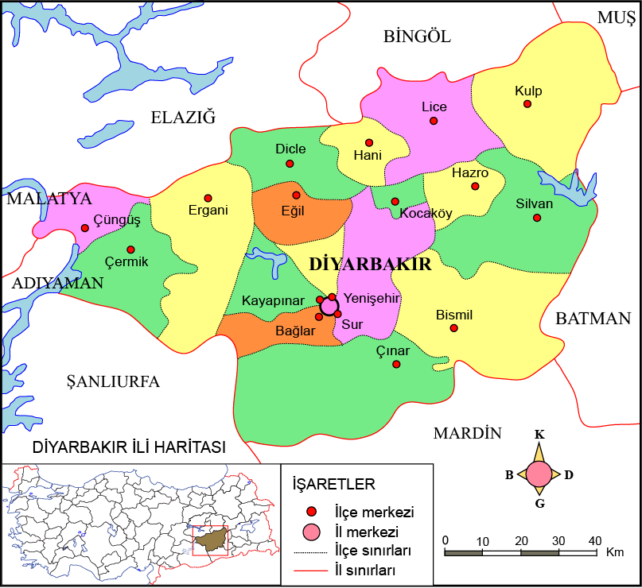
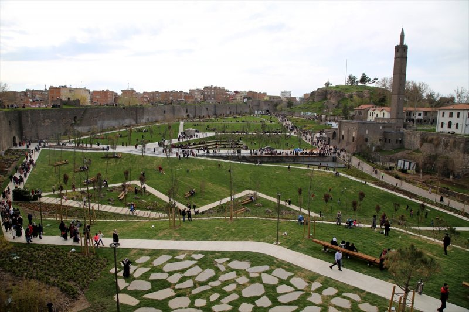
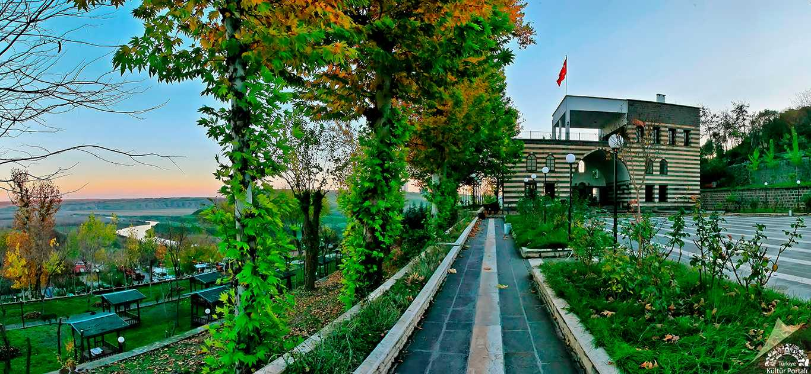
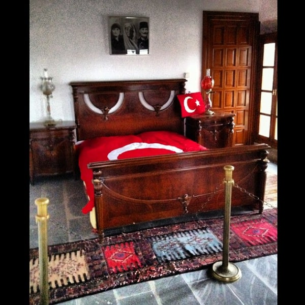
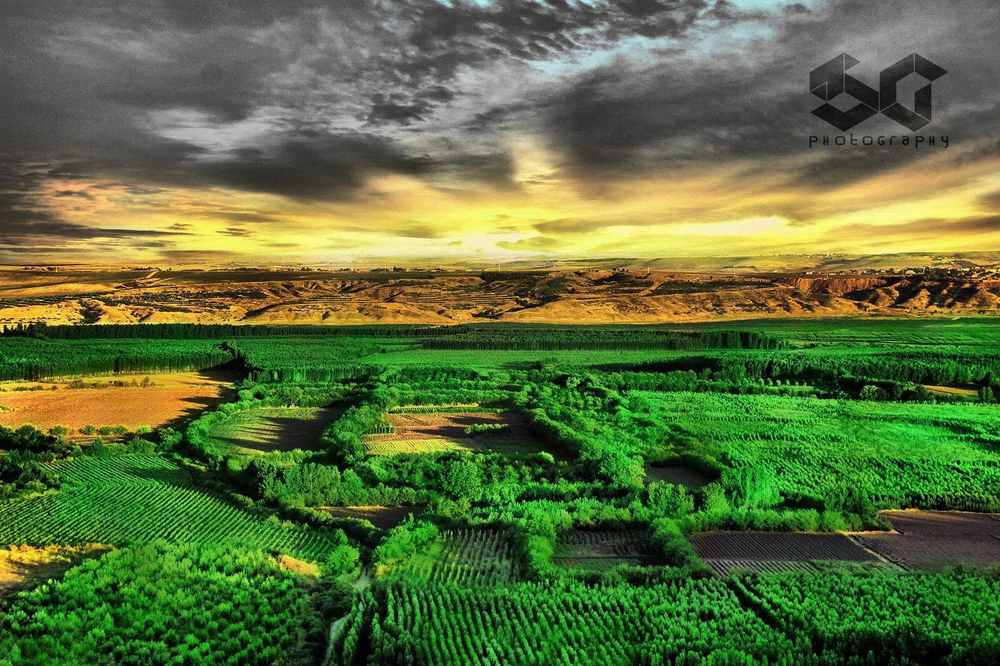
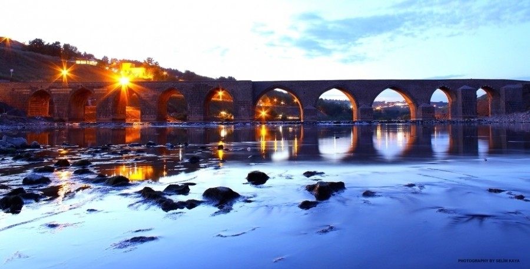
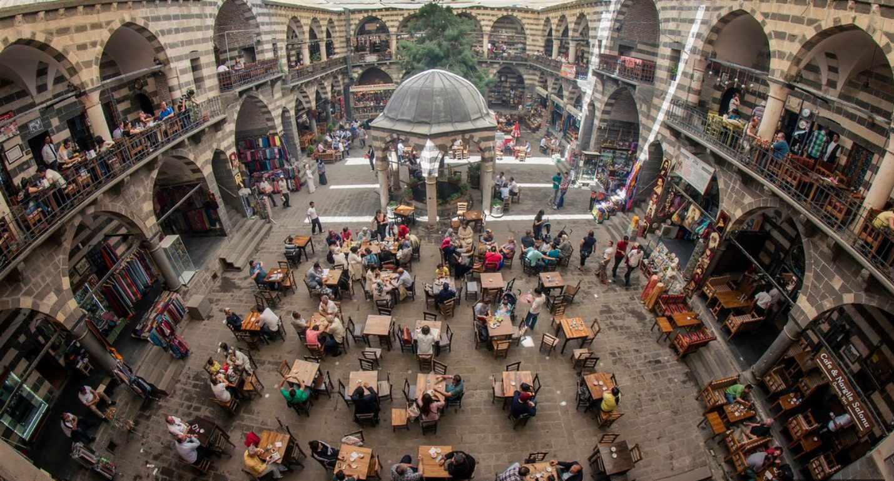

Diyarbakır Hakkında
Türkiye'nin en kalabalık on ikinci şehri. TÜİK ADNKS verilerine göre 2020 sonu itibarıyla 1.783.431 kişilik nüfusa sahiptir. İlin yüz ölçümü 15.272 km2'dir. Valiliğin denizden yüksekliği 674 m'dir. Diyarbakır kent merkezi yaklaşık 9000 yıllık bir geçmişe sahiptir.
Gezilecek yerler
1- Ulu Cami
Anadolu'nun en eski camisidir. 639 yılında Diyarbakır'a egemen olan müslüman Araplar tarafından şehrin merkezindeki en büyük mabedin (Martoma Kilisesi) camiye çevrilmesiyle oluşturulmuştur. Daha sonra 1091 yılında Büyük Selçuklu Hükümdarı Melikşah'ın buyruğu ile büyük bir onarım gördüğünü, değişik dönemlerde birçok kez onarım ve eklentilerle bugünkü şeklini aldığını kitabelerinden öğrenmekteyiz.

2- Hz.Süleyman Camii
İç Kalede, Oğrun Kapı'nın güneyindeki burcun kenarında yer alan caminin en önemli özelliği Hz. Ömer döneminde Diyarbakır’ın fethinin buradan başlamasıdır. Caminin bitişiğinde Osmanlılar Dönemi'nde yapılan Halid Bin Velid’in oğlu Süleyman ile Diyarbakır’ın Araplar tarafından alınışı sırasında şehit düşen diğer sahabelerin burada yattığı Meşhed bulunmaktadır. Sahabelerin burada olması burayı bir ziyaretgâh haline getirmiştir. Yapı günümüzde de geçmişten gelen önemini korumakta ve hala ziyaret yeri olma özelliğini devam ettirmektedir.
3- Gazi Köşkü
Gazi Köşkü veya Atatürk Köşkü, Diyarbakır'da yer alan iki katlı tarihî bir köşktür. 15. yüzyıldan kalma yapı, Akkoyunlu eseri olarak bilinir. Önceleri Semanoğlu Köşkü olarak bilinen köşk, I. Dünya Savaşı esnasında 16. Kolordu Komutanı Mustafa Kemal Atatürk tarafından karargâh olarak kullanılmıştır. 14 Mart 1916 tarihinde Diyarbakır'a gelen Atatürk, 27 Mart 1917 tarihine kadar bu köşkte kalmıştır. Diyarbakır Belediyesince 1937'de satın alınarak Atatürk'e armağan edilmiştir.
 4- Hevsel Bahçeleri
Hevsel Bahçeleri, Dicle Nehri kıyısında, Diyarbakır Kalesi ile nehir vadisi arasında yer alan yaklaşık yedi yüz hektarlık verimli arazidir. Çok farklı türlerin ihtiyaçlarına cevap verebilecek alanlara (habitat) sahip Hevsel bahçeleri, Güneydoğu Anadolu Bölgesi’nin en büyük kuş cennetidir. 180'den fazla kuş türünün yanı sıra susamuru, tilki, sansar, sincap ve kirpi gibi birçok memelinin barınağıdır.
5-On Gözlü Köprü
Şehir merkezine 3 km uzaklıktadır. Köprünün ilk yapım tarihi ile ilgili farklı türde görüşler vardır. Bu görüşlerden bazıları köprünün şimdiki yerinde, antik dönemde de bir köprü olduğunu öne sürer. Birkaç defa kısmen veya tamamen yıkılıp yeniden inşa edildiği düşünülen köprünün, yapım yılı olarak bilinen en yakın ve doğru tarih, köprü üzerinde yer alan kitabeden fark edilmektedir.[2] Kitabeye göre Mervaniler döneminde 1065 yılında yaptırılmıştır
6-Hasan Paşa Hanı
Hasan Paşa Hanı, Diyarbakır'da Ulu Camii'nin doğu girişinin karşısında, Gazi Caddesi'nin üzerinde yer alan tarihî han. Hanın iki kitabesinden öğrenildiğine göre, Diyarbakır'ın Osmanlılar tarafından alınmasından sonra üçüncü vali olan Sokollu Mehmet Paşa'nın oğlu Vezirzade Hasan Paşa tarafından 1572 ve 1575 yılları arasında yaptırılmıştır.
1612 yılında Diyarbakır'ı ziyaret eden Leh Simeon, şehre geldiği zaman indiği Hasan Paşa Hanı'nı şu şekilde tasvir etmiştir: "...Muazzam kârgir bir bina olan bu hanın 500 beygiri barındırabilecek yer altında iki ahırı, rengarenk demir parmaklıklarla çevrilmiş çok güzel havuzu, üç kat üzerine birçok kârgir odaları vardı..."
Yine daha sonraki tarihlerde Diyarbakır'a gelen Evliya Çelebi, Gugios İnciciyan ve James Silk Buckingham Hasan Paşa Han'ından önemle bahsetmişlerdir. Bunlardan Buckingam'ın 1815 yılı için verdiği bilgiler arasında hububat piyasasının burada toplandığı hakkındaki kaydı, 19. yüzyılda da bu hanın büyük bir öneme sahip olduğunu göstermektedir.
